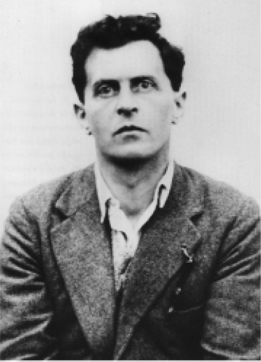

语出亨尼·扬曼
两个幸福的人？
1958年的一个夏夜。绰号“Pop”的莫里斯·比卡姆拿起一杆猎枪，朝两名县警察开火。两名警察当场丧命。事情发生在种族隔离时期的路易斯安那州，比卡姆又是一个黑人，可想而知，当时的场面给他的未来罩上了一团浓重的乌云。他迅速被判处死刑，关进了臭名昭彰的安哥拉监狱，唯一让人意外的可能就是他竟然没有立刻被人私刑处死。关于本案的一些具体细节一直众说纷纭，但比卡姆坚称，他开枪是为了自卫，并且他是在自己先被开枪打中之后才扣下扳机的。他的辩驳有理有据。据说，那两名警察都是三K党成员，在酒吧外发生一场小争执后，试图谋杀比卡姆。
37年后，人们发现当时的判决并不公正，再加上他本人在狱中表现优异，78岁的比卡姆被放出安哥拉监狱。他一直为自己当年杀死了两名警察表示忏悔。但是在出狱时，有人问比卡姆，如何看待自己在路易斯安那的一座监狱中度过大半生，其中还有14年是死刑犯这件事。“我一分钟也不后悔。”他回答道，“那是一段辉煌的经历。”
唉，可惜没有一位研究幸福的学者以铁窗后的人群作为研究对象。但比卡姆的回答几乎等同于表示他对自己的生活颇为满意，事实上，可以说非常满意。毫无疑问，要是有人询问他对自己的整个人生是否满意，他的答案也是肯定的。正如比卡姆“坚定地”向一位记者表达的那样，“世界上最自由的人就是对于自己眼下所拥有的感到满意的人”。就像很多人遇到困难时一样，他极力从绝境中寻找光明，并且多往好处想：“我能挺过这一切，坚持到出狱，身体和头脑都不算太差，已经非常让我感到高兴和幸福了，感谢上帝赐予我这一切。”他的所作所为没有不合理的地方，甚至让人油然生出敬佩。广播记者戴维·伊赛是极力促成比卡姆重获自由的人之一，他称比卡姆为“我遇过最励志的人”。
让我们假设比卡姆确实对自己的生活感到满意，就算是在身陷囹圄的那段痛苦时光里，大部分时间他也对生活感到满足。那我们能否认为在那些年里他过着幸福 的生活呢？根据一个广为流传的幸福理论——生活满意度 理论，答案是肯定的。不过我们还是得注意两点。
首先，这种“幸福”并不能告诉我们比卡姆在监狱中是否过着一种情绪上感到满足的生活，比如他是不是开心快乐、心态平和、享受人生、充满活力或处于其他任何积极的情绪状态。或许他的情绪状态很积极，但这跟他对自己的生活满不满意是两回事。生活满意度本质上来说是一个人对自己生活的判断，不管你实际感觉如何，都可以对生活做出正面的判断。
无论如何，比卡姆的牢狱生活很有可能根本就不令他快乐或无法让他获得情绪上的满足：毕竟，我们所讨论的环境可是文明世界里众所周知最残暴的机构之一。有人问比卡姆他是否像被埋葬在冰川里5000年的“冰人”一样，比卡姆回答道：“我不在冰里，我在一个罐头里。有人把罐头打开，于是我爬了出来。”在服刑期间，比卡姆经常通过《圣经》寻找慰藉。他曾经最爱的《圣经》节选出自《诗篇》第31章：“我被人忘记，如同死人，无人记念。我好像破碎的器皿。”如今，作为自由人，他更喜欢《诗篇》第30章中的一段：“一宿虽然有哭泣，早晨便必欢呼。”
在我看来，我们不应该勉强自己相信比卡姆在安哥拉监狱度过了欢乐的人生。而且不管比卡姆本人对他的生活有多满意，用幸福 来形容“哭泣”的犯人依然很奇怪。
第二点需要注意的是，即便比卡姆对自己的生活很满意，也不表示他认为自己的生活非常顺利 。事实上，我们几乎可以肯定他并不这么认为，他只不过是觉得比起“在一个罐头里”的人生，重获自由要好得多，其实他很清楚，自己虚度的光阴已经无法挽回。
他也很有可能会想：“算了，虽然我的人生很糟糕 ，但至少我还很健康，头脑也很清醒。上帝赐予我的比我应得的更多，所以我很满意。”
不管是以你自己的标准还是其他任何标准，对生活满意不代表你觉得自己的生活一帆风顺。
因此，就算我们说比卡姆的监狱生活是幸福的，因为他对自己的生活很满意，我们也依然完全不清楚他的情绪生活到底快不快乐、体不体面；我们也无从得知，假如以他自己的标准判断，他的生活到底顺不顺利。这只能告诉我们，不管他的生活有多糟，他自己觉得已经足够 好了。
这项关于幸福的理论似乎非常诡异。你完全有理由质疑，假如这就是结论，为什么还会有人在乎生活幸不幸福？假如这就是幸福，谁会需要这样的幸福呢？
或许比卡姆是一个较难评估的对象，因为他的性格非常乐观。既然已经有了大团圆结局，可能很难让他再去回想漫漫长夜里的悲伤。
若真如此，那么接下来我要拿路德维希·维特根斯坦这位众所周知饱受折磨的哲学家来供诸位参考。维特根斯坦因病英年早逝，据传他曾亲口说：“告诉人们我拥有精彩的一生。”有时，维特根斯坦会被人们称为20世纪最重要的哲学家，他的一生确实充满乐趣，成就颇丰，因而他对自己的人生做出如此评价貌似非常合理。那么他是否幸福 呢？请欣赏他的照片（图6）。这个人看起来好像一出生便看到了鬼魂。甚至不会有人诅咒周围最可恶的孩子将来拥有这样“精彩的一生”，而且我极度希望自己的孩子绝对不要经历维特根斯坦式的精彩人生。这位先生身上所流露出的痛苦气息过于浓烈，以至他的钢琴家哥哥保罗一度对他抗议道：“你在家的时候我简直没法弹琴，隔着门都能感觉到你的讽刺从门缝里朝我涌来！”假如你还是不相信的话，我建议你去看看他在维也纳为他姐姐设计的房子——建筑是维特根斯坦的另一项专业。那座死气沉沉的住宅从头到尾散发出阴郁的气息，就连维特根斯坦本人也不喜欢它，尽管他辛辛苦苦地在这座房子上投入了两年时间。他的姐姐就更不用说了。维特根斯坦家族有三名兄弟自杀而亡，这个姐姐奇迹般地躲过一劫，哲学家本人则差点成为第四个自杀的人。尽管如此，还是明显可以看出维特根斯坦对自己的人生非常满意。

图6 路德维希·维特根斯坦
按照很多学者对幸福的定义，比卡姆和维特根斯坦都是幸福的。在一项调查中，有6%～7%的受访者表示对生活“非常满意”，这些人也是幸福的，尽管他们同时也表示自己“常常感到不幸福或抑郁 ”。他们的这种幸福到底是不是我们所理解的幸福呢？
关于幸福的生活满意度理论
总体看来，享乐主义理论和情绪状态理论都认为幸福与感觉 有关，而生活满意度一般被认为主要跟个人评判 有关。我们可以有很多方式来解读生活满意度理论，但在这里，我主要分析一种最普遍、最有说服力的方式。一个人要对自己的生活满意，就意味着按照你自己的标准判断，你的人生足够顺利。也就是说，将所有因素纳入考量之后，你认为人生中有足够自己在乎的事情。因此，生活满意度就是你对自己人生的综合评估。这种关于幸福的理论有其迷人之处，因为这样一来，你便成了自己人生的主宰，你幸福与否取决于你自己认为什么最重要。
人们常常将生活满意度称作“享乐”的产物，也就是心情快乐的产物。他们将生活满意度的测试与感觉的测试混为一谈。这种想法是错误的。我们之所以将研究重心放在生活满意度而非感觉上，就是因为幸福不 仅仅是一个关于我们快乐与否的问题。许多人除了自己的快乐之外还关心很多事情，生活满意度则体现了这一点。一位功成名就的艺术家或科学家或许并没有生活得很快乐，但他可能还是对自己的人生感到非常满意，因为他得到了自己真正在乎的东西。生活满意度有其独特的重要性，因为它实则追踪的是人们的价值观。起码表面上看起来是这样。
生活满意度有多重要？
实则不然，至少生活满意度反映价值观的方式跟你想象的不一样。人们可以在感觉很差，甚至在感觉生活对他们有负面影响 的情况下，仍然感到满意。正如我们在比卡姆的案例中所见到的，就算一个人对自己的生活感到满意，旁观者也完全无从知晓，在这个人的生活当中，他在自己所在乎的领域里是否进展顺利。
为什么生活满意度与我们对自己生活的看法之间联系如此松散呢？有两个原因。首先，生活满意度需要你对生活做出全面的评判 。然而生活是复杂的，有苦有甜。你可能很高兴自己拥有一份有趣的工作、出众的滑翔技术、有爱的家庭和运转正常的手提电脑，但自己的腰疼、孩子常常一起厮混的怪朋友、你对丈夫撒的谎，以及父母的去世则让你感到沮丧。诸如此类的例子不胜枚举，你在某处得到一些，另一处就失去一些。那么将这些得失加在一起结果如何呢？没有人知道。
人生不是一套按部就班的体操动作。假如你想用一个简单的数字来概括自己的人生，那结果一定非常随机。（就连体操比赛的评分也有随机的成分在里面。）按照你看待事情的方式不同，你可以简单地给自己的人生打4分或7分。然而就算你自己的评分是7，也不表示你的人生就一定比4分的人生要好。这就像投硬币进行选择一样，都是天意。
其次，生活满意度需要你对生活做出特殊的全面评判：你不仅要评判自己的生活是否顺利，还要评判对你来说够不够顺利 。你的人生令人满意吗？假如你仔细想想，会发现这个问题其实挺奇怪的。跟什么相比令人满意？可能有人会说：“跟你自己的目标或抱负相比呗。”但是你得在多大程度上 实现自己的目标才能算“令人满意”？是实现12%就够了，还是你想要做到74%？或者是100%？这个问题本身究竟重不重要？
一般来说，我们都知道该如何评判消费品是否让自己满意。举个例子，假如你点了一份全熟的牛排，却上来一份生的牛排，那么由于你对食物有明确期望，因此自然而然就会得出结论——生牛排不尽人意，所以你让服务员把它拿回去。但当人生中出现不如意的时候，你该得出什么样的结论呢？人生不是消费品，你不能让人把它拿走升级，也不能下次换去别的地方选购。不管怎么说，人生入场是免费的，你出生了，生活便开始了。因此很难为“足够美好”的人生设立一个标杆。你可能会满足于2分的人生，也有可能8分才会令你满意。就算你对自己的人生感到满意，也有可能只是因为你降低了标准，只有发生特大灾难才会令你感到不满。毕竟好死不如赖活着嘛。
因此，假如你随意制订了一套计算生活中好与坏的方法，那你还得再做一个随意的决定，看看“足够美好”的标准是什么。也就是说，我们先掷了一次硬币，然后又掷了一次硬币。这种随机性可能并不明显，因为人们往往习惯于用某种特定说法来概括此类判断。例如，除非情况特别坏或特别好，你可能都会说“还行”，或“挺满意的”。这也许就是为什么不管如何设置生活满意度问卷的测试量表，结果常常集中在75%这个分数上。人们的惯常想法就是，人生没什么可抱怨的，但也不算完美。“还可以吧。”
由于我们没有充分理由认定只有一种判断生活满意度的方式，所以与我们生活是否顺利无关的事情也可以被拿来当作部分判断依据。如果你比较重视像感恩或坚毅这样的美德，那么你可能会决定更侧重于人生中积极的方面。这么一来，假如你对生活产生不满，就会觉得自己是个忘恩负义的人。又或者你会在形势不太乐观时将注意力集中在积极的事情上，以此来振作自己。但假如你对生活表示满意仅仅是因为不想成为满嘴抱怨的人，那我们便无从知晓你内心究竟觉得自己的人生顺不顺利。
因此，就算在逆境中的人们声称他们对生活很满意，也并不表示他们的生活真的一帆风顺。加尔各答的贫民窟居民多半表示他们很满意自己的生活，但我们还是不知道他们是否觉得自己的生活很顺利。就像那份揭露了这项发现的文章标题所暗示的那样，说不定他们只是在尽力从（在他们看来）糟糕 的情况中发掘一些闪光点。与此类似，关于德国人和英国人的大型长期研究表明，大部分人在配偶离世或失业期间 依然声称他们对自己的生活很满意。我们根本不清楚他们在经历这些困难期间是否真的认为人生依旧顺利。但研究人员要求他们解释自己为何对生活感到满意时，参与研究的埃及受访者并不总是回答“因为我的人生很棒”。他们会说：
其实他们的意思是：“生活就是在要害处给了你一击，但你又能怎么样呢？”你在脑海中为自己的孩子规划的可能不是这样的幸福。
更令我们困惑的是，有时人生中的重大变故会对生活满意度产生匪夷所思的影响，或甚至根本没有影响。在一项研究中，透析病人所反映的生活满意度丝毫不输给身体健康的人，不过同时他们也表示，愿意放弃余下寿命的一半 来换取正常的肾脏功能。换句话说，他们的生活满意度报告竟然没有体现出巨大不满，很有可能是由于为了接受自己患病的事实，他们把自己与其他病人做对比。
在一项针对结肠造口术病患的研究中，那些只能永久使用结肠造口的人竟然比临时使用的人生活满意度更高 。这是为什么呢？永久性的结肠造口表示你余生都只能用结肠瘘袋来处理自己的排泄物。真的会有人觉得，这要比临时有这种需求更好吗？这极有可能是因为没有康复希望的病人只是降低了自己对于“足够美满”生活的标准。他们的实际病情确实更严重，但他们对生活更满意。
你可能会觉得生活幸福对人们来说是一件很重要的事。但假如我们认为生活满意度就能代表幸福与否，那么有一大堆积极乐观的囚犯，正在他们看来 空虚、痛苦、压抑的生活中受苦，却依然对自己的人生表示满意。这种对于幸福的解读可不怎么鼓舞人心。
或许，想要说服人们接受生活满意度其实没有那么重要这个看法很难。当我们试图想象一个对生活感到满意的人时，脑中会浮现一些约定俗成的形象，比如格蕾塔姑姑回想起自己极其成功的一生。而由于大部分人只有在真正走投无路时才会承认自己对生活不满，所以我们对于这类人的刻板印象就是：鲍勃叔叔身体不佳，壮志未酬，婚姻摇摇欲坠。
但是在上面这两个例子中最显著的并不是人们对于生活满意或不满意的评判 ，真正突出的是他们的人生 是成功还是失败。格蕾塔姑姑已经实现了职场抱负、成就非凡，但是她觉得自己的人生还可以更上一个台阶，也就是说，她的人生如日中天，但她自己却并不满意。在这种情况下，她的人生依然是成功的。倘若鲍勃叔叔降低自己的标准，认为人生本可以更糟，这样一来，虽然他的生活一塌糊涂，但自己却挺满意的。可惜，即便如此，他的人生还是一场灾难。他们各自对人生的满意程度似乎没有太大区别。但是他们的幸福程度 难道不应该有着天差地别吗？
很明显，当人们谈论幸福的时候，有时他们脑中想的却是生活满意度。因此，形容那些唯有自己对生活满意的人是“幸福”的可能也不是什么错误。但这种想法具有误导性，而且对于我们的研究没有什么帮助。
生活满意度的重要性
但这并不表示生活满意度研究不能提供有用的信息。即便人们本身对生活是否满意并不重要，但只要我们了解某一群体是否比另一群体对生活更 满意，我们就可以推断出他们的相对 福祉水平。当然其中也会有一些例外，不过总体来说，生活满意度较高的人更能实现自己的价值。他们对于生活中某些特定的方面更加满意，一般在其他测试中的结果也比别人更好。即便一个群体中每个人 的标准都很低，都觉得只要活着就很满意，上述规律也有可能继续存在。不过，我们讨论到的那些缺陷会导致人们非常担心生活满意度测试的可信度。既然人们对自己生活的看法非常重要，那么研究人员可能得想办法设计出更好的方式来获取这类信息。
有一种有趣的推论，它认为大部分人其实都有理由对自己的人生感到满意。在最后一章中，我们也会看到，大部分人确实都拥有美好人生。这并不是说他们一定生活优渥或是达到了心盛的状态，而是一种广义上的肯定，说明他们的人生值得选择，他们有充分理由认可自己的人生。在致悼词时，人们有理由形容他们的一生是“美好的”。
比卡姆和维特根斯坦对自己生活的认可或许并不是无稽之谈。正相反，他们似乎确实度过了 美好的一生，他们的人生有起有伏，值得肯定。倒是我们犯了大错，认为生活满意度可以告诉我们人们过得究竟好不好、人生是否欣欣向荣。很明显，生活满意度没有这些含义。
总结一下，幸福究竟是什么？
现在我们来总结一下第二章和第三章所传达的主要信息：关于幸福的情绪状态理论体现了我们的本能反应，解释了幸福生活在世人眼里为何如此重要。本书中剩下的章节将以此为背景。享乐主义理论也证明了幸福的重要性，但似乎不太符合一般大众对于幸福的解读。生活满意度理论乍一看似乎有理，却不能解释我们人为赋予幸福的价值。“我只想让我的孩子生活幸福”听起来似乎有些夸张，但要比“我只想让我的孩子对他们的生活感到满意”更加铿锵有力。毕竟，如果你只想让孩子感到满意，那就让他们想想《圣诞颂歌》里悲惨的小蒂姆，然后学会知足常乐就好啦。